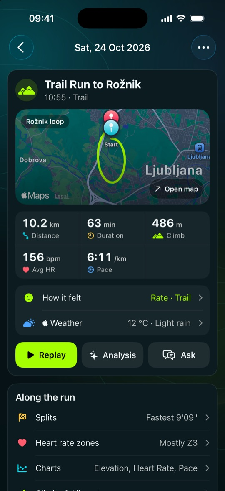
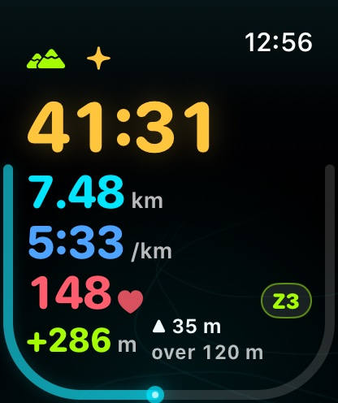
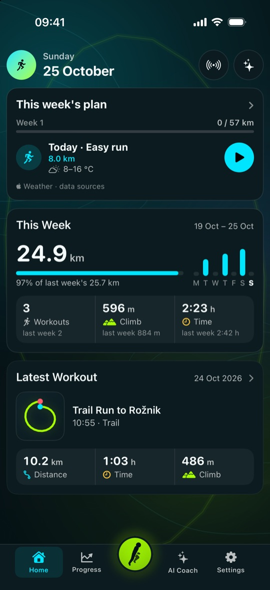
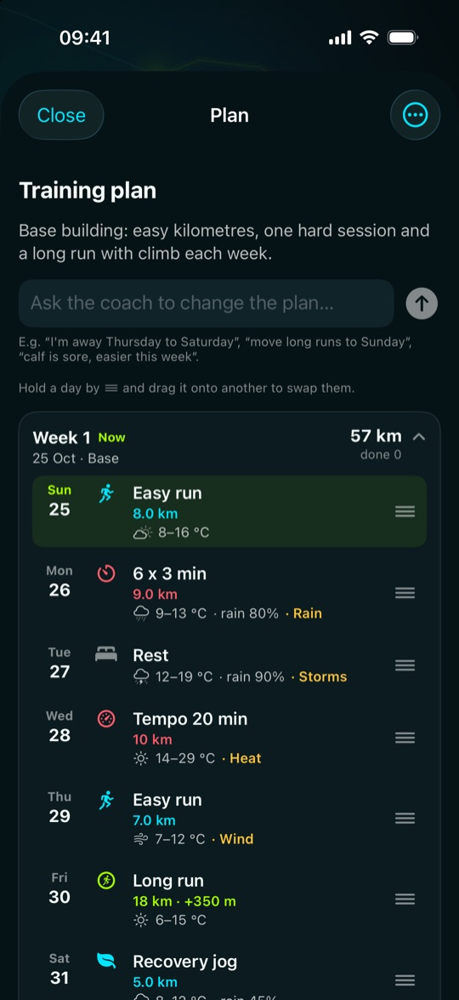
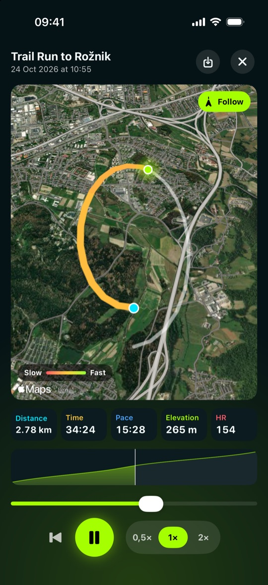
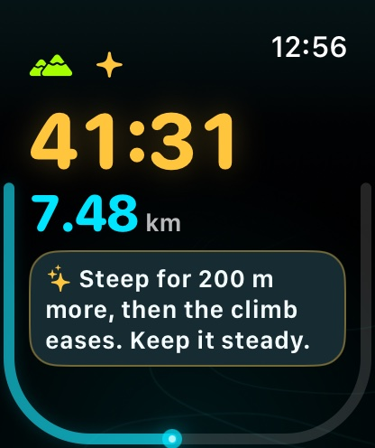
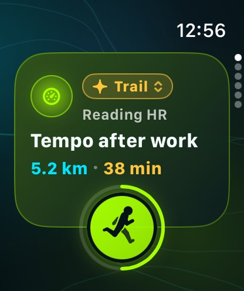
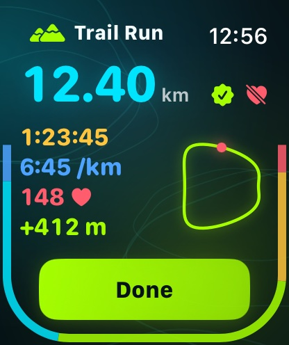

Apple Watch · iPhone
Feel every climb.
Feelrun is a running coach for Apple Watch and iPhone, made for trails and hills. It records your runs, hikes and walks, coaches you through the climb ahead, and plans your weeks to your goal race.
10.2km +486m 1:03h 156bpm 6:11/km
A sample trail run, each measure in its colour in the app. Integrates with Apple Health: Feelrun reads your workout history and saves the runs you record.


Everything free for 30 days
Then a clear choice, with nothing to cancel.
- Nothing is charged, not then and not after.
- No subscription: nothing renews and nothing needs cancelling.
- After 30 days Feelrun becomes read-only: your runs until then, your history and statistics stay to read.
- To keep recording, Feelrun Pro is one purchase, once, only if you want it.
On iPhone
Every run in detail, and a coach who knows them




Record
- Runs, hikes and walks on Apple Watch or iPhone, saved to Apple Health
- Time, distance, pace, heart rate, zone and climb at a glance on the watch
- Spoken cues with your pace, and alerts at the limits you set
- Off-route alert, and a sunset warning that reckons the way back
Understand, always yours to read
- Every run in detail: map, splits, heart-rate zones, charts, weather and how it felt
- Route and climb comparisons with your earlier runs
- Replay any run on the map, and save it as a video
Coach and plan
- AI coach: cues written for you during the run, an analysis of every run, and a chat
- A training plan to your goal race, week by week, around the weather forecast
- Live sharing: someone at home follows your run on a map
On Apple Watch
What matters, at a glance on the climb



Private by design
No account, no Feelrun server, no tracking. Your runs stay on your iPhone and in Apple Health. The AI coach uses your own OpenAI or Anthropic key and asks before any workout data is sent: how to set up your key.